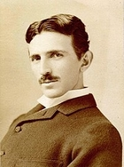

|
 Nikola Tesla, né dans la nuit du 9 au 10 juillet 18561 à Smiljan dans l'Empire d'Autriche (actuelle Croatie) et mort le 7 janvier 1943 à New York, est un inventeur et ingénieur américain d'origine serbe. Il est notoirement connu pour son rôle prépondérant dans le développement et l'adoption du courant alternatif pour le transport et la distribution de l'électricité. Tesla a d'abord travaillé dans la téléphonie et l'ingénierie électrique avant d'émigrer aux États-Unis en 1884 pour travailler avec Thomas Edison puis avec George Westinghouse, qui enregistra un grand nombre de ses brevets. Considéré comme l’un des plus grands scientifiques dans l’histoire de la technologie, pour avoir déposé quelque 300 brevets couvrant au total 125 inventions (qui seront pour beaucoup attribuées à tort à Edison) et avoir décrit de nouvelles méthodes pour réaliser la « conversion de l’énergie », Tesla est reconnu comme l’un des ingénieurs les plus créatifs de la fin du xixe et du début du xxe siècle. Quant à lui, il préférait plutôt se définir comme un découvreur. |